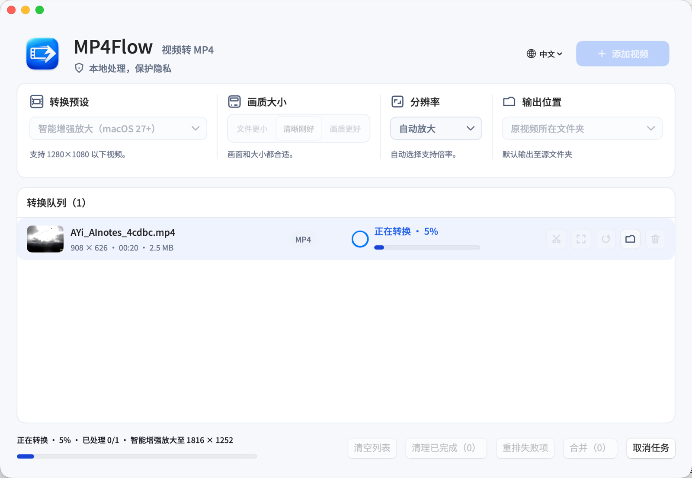

视频留在你的 Mac
转换在本机完成；MP4Flow 不上传你的素材。

转换在本机完成；MP4Flow 不上传你的素材。
兼容时直接封装；需要转码时优先使用 Apple 硬件能力。
项目以 MIT 许可证开源，功能没有付费墙。
日常需要的，刚刚好
为常见视频选择兼容的 MP4 路径，尽可能避免多余的重编码。
在队列中完成轻量编辑，精确到帧地选择剪切范围。
查看进度、重试失败任务、取消任务，并安全地保留原文件。
保持原画，或按视频自身尺寸选择 480P、720P、1080P 与更高目标。
在兼容的 Apple 芯片与 macOS 27+ 上，可使用系统 VideoToolbox 超分能力。
开源开发，欢迎提交问题、测试边缘素材，或一起完善工具。
从文件到可播放 MP4
拖入文件，或从 Finder 选择素材。
用清晰的预设选择质量、尺寸与输出位置。
进度清晰可见，完成后可直接在 Finder 中查看。
从 GitHub 获取
下载最新版本，或从源代码构建。MP4Flow 始终免费、开源，并在你的 Mac 上运行。